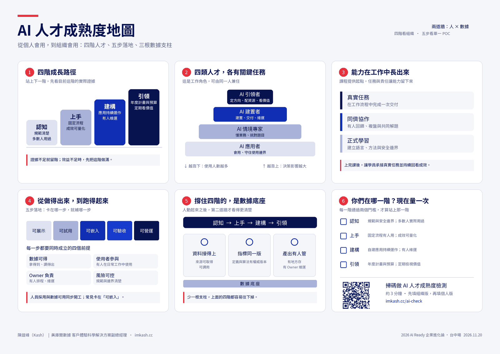

一張 A3，六格。從個人會用，到組織會用。
這張地圖把「企業導入 AI」拆成六塊，一頁看完：人才怎麼分層、能力怎麼長出來、一個 POC 要走幾步、數據底座撐不撐得住。
A3 橫式 PDF，可直接列印。不用填任何表單。

點圖可開啟 PDF。
| 格 | 內容 | |
|---|---|---|
| 1 | 四階成長路徑 | 認知 → 上手 → 建構 → 引領，每一階寫明「要有什麼實際證據才算站上」 |
| 2 | 四類人才 | 應用者／情境專家／建置者／引領者，各自的關鍵任務。這是工作角色，可由同一人兼任 |
| 3 | 能力在工作中長出來 | 真實任務、同儕協作、正式學習——課程只是起點，任務與責任才讓能力留下來 |
| 4 | 從做得出來到跑得起來 | 可展示 → 可試用 → 可嵌入 → 可驗收 → 可營運，加上每一步都要同時成立的四個前提 |
| 5 | 數據底座三支柱 | 資料接得上、指標同一版、產出有人管。少一根，上面四階都容易往下掉 |
| 6 | 自評表 | 每一階兩個門檻，勾一勾就知道自己卡在哪 |
地圖的第 6 格是快速自評。如果你想要四個面向各自的剖面圖——人、流程、數據、治理分開看，並指出是哪一個面向拖住其他三個——可以做線上診斷。
主管版 16 題約 8 分鐘，同仁版 5 題約 2 分鐘，填完當場看結果。
做 AI 人才成熟度診斷